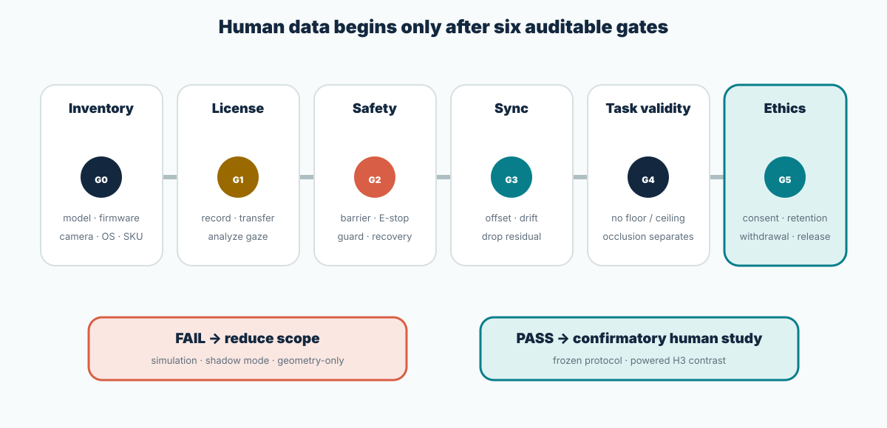

Frontiers figures
The source article is CC BY. Author, article, and figure are attributed, and the images are labeled as prior work.
Visual evidence room · source and role visible
Manufacturer media establishes device form and software context. Prior-work figures explain existing methods and measurement challenges. Original SVGs specify the proposed mechanism, experiment, dataset, and execution gates. Every external item identifies its source and states that it is not a Sightline result.
Motion and workflow
The xArm video provides physical manipulation context. The Tobii video shows a research analysis workflow. Neither demonstrates the proposed closed loop or its performance.
Use this only to understand the arm’s form factor and tabletop task space. It does not validate the proposed camera policy or safety claim.
Source: UFACTORY official page ↗
The video illustrates design, recording, visualization, and analysis in Tobii’s research ecosystem. Sightline’s online trigger and synchronized robot schema are separate proposed components.
Source: Tobii official video page ↗
Hardware context
These are official manufacturer assets. Final robot reach, payload, repeatability, mount geometry, and supported features come from the audited model and current documentation.

Camera stands, barriers, and props must remain clear of the swept volume while preserving views of the scripted task zone.

Official xArm6 figures can inform planning only if inventory confirms that model. Other xArm variants have different geometry and payload.

Robot diagnostics, firmware, configuration, and recovery belong on an experimenter-only screen, not inside the controlled camera interface.
Source: UFACTORY official page ↗

Three cameras observe a restricted workcell while the participant remains behind a physical barrier at a screen-based station.
Eye-tracking media
Official Tobii visuals explain general eye-tracking hardware and analysis. The proposed study still validates its exact tracker, monitor, calibration, sample validity, and analytical-use rights.
Video-based trackers use illumination, cameras, an eye model, and calibration to estimate a point of gaze. The result remains a measurement with error and missingness.
Source: How eye trackers work · Tobii ↗

Heatmaps and gaze plots are summaries. Sightline preserves per-sample validity, exact UI layout, event time, and versioned AOIs before visualization.
Source: Tobii Pro Lab official page ↗

Screen-based analysis depends on the stimulus and time interval. In Sightline, the stimulus itself changes, so panel geometry and frame identity are part of every record.
Source: Tobii Pro Lab official page ↗
Official nominal sample rate. It does not guarantee accuracy, valid-sample ratio, research rights, or correct synchronization.
ET5 support depends on specified monitor formats and Windows versions. The actual study records empirical quality rather than substituting the headline rate.
Source: Tobii ET5 specifications ↗
Prior research visuals
These figures make existing approaches concrete. They do not predict the result of the proposed physical xArm study.

Task visibility and occlusion can drive camera-pose planning. Sightline treats this family as a strong geometry-only baseline.
Source: Rakita et al., RSS 2019 ↗

This study combines gaze and motion in simulated manipulation. Sightline narrows gaze to inspection evidence and keeps it outside the command path.
Source: Fuchs & Belardinelli, Fig. 1 ↗

A gaze point near an AOI edge can change label under plausible error. Sightline therefore reports threshold and AOI-dilation sensitivity.
Source: Fuchs & Belardinelli, Fig. 3 ↗

An event-aligned AOI sequence can show whether critical evidence was inspected before contact. An aggregate heatmap cannot.
Source: Fuchs & Belardinelli, Fig. 4 ↗

Gaze features vary across people and trials. Mixed effects and sensitivity analyses are more informative than one global binary threshold.
Source: Fuchs & Belardinelli, Fig. 5 ↗

Hardware overlap is not enough; the map distinguishes retrospective gaze, direct command, fixed layouts, and adaptive views.
Original research diagrams
These repository-native SVGs are proposal schematics—not collected data. They remain legible without external media and can be versioned with the protocol.

Shows why the overhead view can fail near contact and when a side view becomes relevant.

Separates visibility, interpretation, and allocation failures so the proposed remedy stays narrow.

Gaze may affect presentation; only explicit guarded input affects xArm motion.

AOI overlap may support limited inspection evidence, not attention, intent, approval, or safety.

C3−C2 isolates the incremental value of gaze over geometric risk.

Aligns occlusion, eligibility, cue, operator response, and physical result.
Defines camera roles, barrier, display, tracker, controller, and E-stop.

Connects gaze, UI, camera, controller, robot, scene truth, and outcomes through a shared clock.

Shows fixed effects, random effects, outcome families, and the primary contrast.

Inventory, license, safety, sync, task validity, and ethics determine whether the study may proceed.
Places Sightline among gaze analytics, gaze control, multiview ergonomics, and adaptive viewpoints.
Media policy
External files are loaded from their original servers when practical. Rights remain with their owners; the repository content license applies only to original text and SVGs.
The source article is CC BY. Author, article, and figure are attributed, and the images are labeled as prior work.
Official assets explain hardware and software context. No redistribution license or performance endorsement is inferred.
Repository-native diagrams follow the project content license and are marked as proposal schematics.
External media may disappear offline. Core logic remains available through English text and original local SVGs.